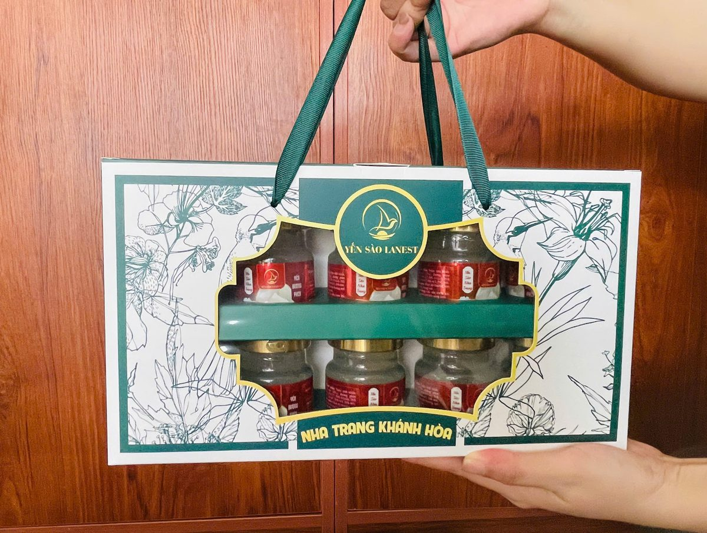
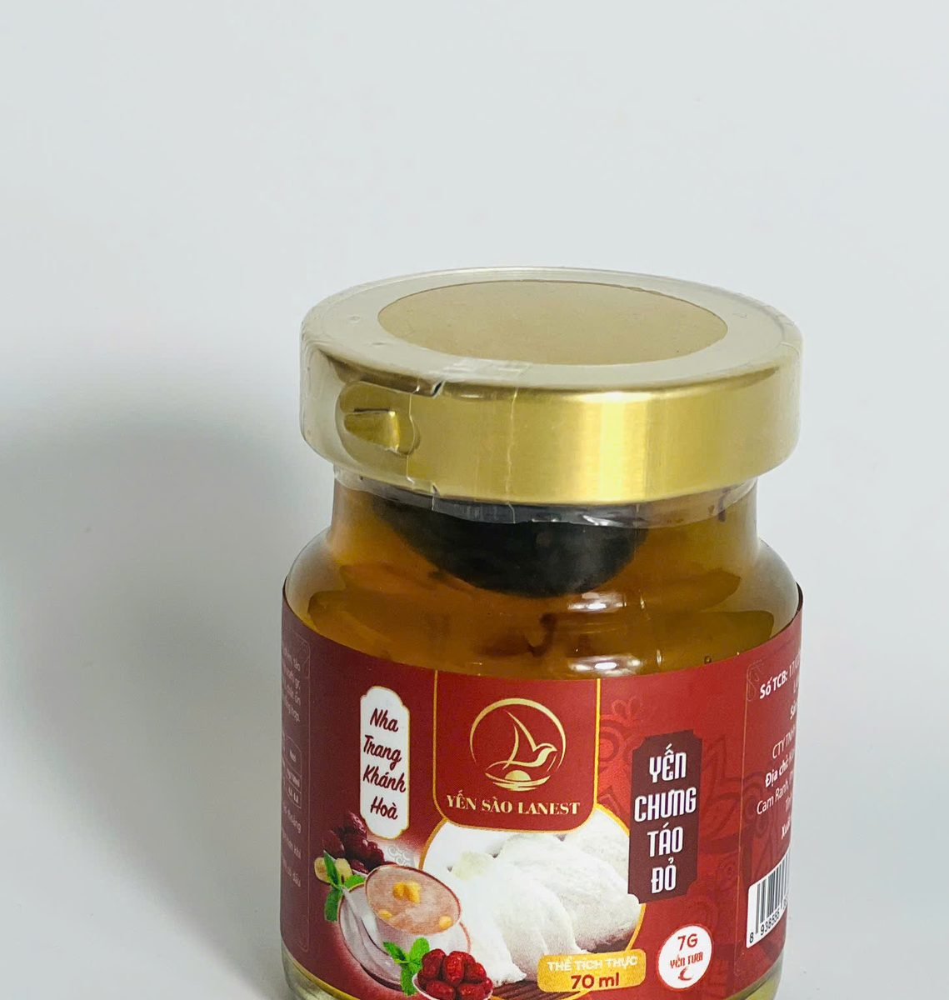

Nhận Quà Tết Là Yến Sào: Cất, Dùng Và Chia Cho Cả Nhà Thế Nào
Yến Sào Lanest · Đăng ngày 28/11/2026

Tết nào cũng vậy, nhà nhiều người sẽ nhận về vài hộp yến: hộp yến hũ của đối tác, hộp tổ yến con cháu mang về, có khi cả túi tổ yến thô người quen gửi từ vùng biển. Nhận quà Tết yến sào thì vui, nhưng cất sao cho khỏi hỏng, dùng sao cho đều, chia cho ai trong nhà thì không phải ai cũng rõ. Bài này Lanest viết cho người nhận quà, theo đúng các hướng dẫn Lanest đang dùng cho khách.
Hộp quà xanh 6 hũ yến chưng, mẫu quà quen thuộc mỗi dịp cuối năm
1. Mở quà: mình đang có loại yến nào?
Mỗi loại yến cần một cách cất và cách dùng khác nhau, nên việc đầu tiên là nhận ra mình đang cầm loại nào.
| Loại yến | Nhận ra bằng gì | Trước khi ăn cần làm gì |
| Yến hũ chưng sẵn dòng 7g | Hũ thủy tinh 70ml, nhãn ghi tên vị và "7G yến tươi" | Lắc nhẹ, dùng ngay hoặc chưng cách thủy cả hũ nếu thích ấm |
| Yến hũ nguyên chất 100% | Nhãn ghi tổ yến nguyên chất, 1,5g tổ yến mỗi hũ | Dùng ngay, ngon hơn khi uống lạnh |
| Yến tinh chế | Hộp kín, yến khô đã sạch lông, đắp tổ hoặc bông | Ngâm nước lạnh cho nở mềm rồi chưng cách thủy |
| Tổ yến thô | Tổ yến khô còn lông, chỉ được làm sạch nhẹ bên ngoài | Ngâm khoảng 1–2 giờ, nhặt sạch lông rồi mới chưng |
Muốn đọc kỹ chữ trên nhãn hũ, xem bài cách đọc nhãn yến hũ.
2. Kiểm tra trước khi cất
- Hạn sử dụng: mỗi lô có ngày sản xuất riêng, hạn in trực tiếp trên bao bì. Hộp nào hạn gần hơn thì để ra ngoài, dùng trước.
- Nắp và tem niêm phong: hũ nứt, rò rỉ, nắp lỏng hay tem rách thì không dùng.
- Yến khô: nhìn xem có ẩm, mốc hay dị vật không.
Nếu quà là yến Lanest mà hũ bị vỡ, rò rỉ khi vừa nhận, anh chị gọi hotline để được hướng dẫn. Chụp ảnh hoặc quay lại lúc mở hộp sẽ giúp xử lý nhanh hơn.
3. Cất đúng chỗ trong mấy ngày Tết
Ngày Tết bếp nấu liên tục, nhà đông người, tủ lạnh chật kín đồ ăn. Vài điều nên nhớ:
- Hũ yến chưa mở: để ở nhiệt độ thường, nơi khô ráo, thoáng mát. Tránh cạnh bếp, nồi cơm điện, bậu cửa sổ có nắng, cốp xe. Không cần dồn cả thùng vào tủ lạnh, chỉ để sẵn vài hũ trong ngăn mát cho mấy ngày tới.
- Hũ đã mở: cất lạnh và dùng sớm. Tốt nhất mở hũ nào uống hết hũ đó, không để hũ đã mở trên bàn tiếp khách cả buổi.
- Yến tinh chế, tổ yến thô: giữ trong hộp kín, lấy bằng tay khô, đậy nắp ngay. Yến tinh chế đã mở hộp nên dùng trong vòng 6 tháng.
- Yến tự chưng: để nguội, đậy kín, cất ngăn mát và dùng trong 1–2 ngày.
Chi tiết cho từng loại có trong hai bài bảo quản yến hũ chưng sẵn và cách bảo quản tổ yến.
4. Dùng đều, đừng dồn cho hết
Nhận nhiều hộp cùng lúc, nhiều nhà có thói quen uống liền mỗi ngày mấy hũ cho "khỏi phí". Hướng dẫn của Lanest thì ngược lại: kiên trì dùng đều tốt hơn ăn dồn dập rồi bỏ ngang.
- Người trưởng thành dùng khoảng 2–3 lần mỗi tuần là vừa, nhiều nhất 3–5 lần.
- Chọn lúc bụng nhẹ: sáng sớm, hoặc tối trước khi ngủ khoảng một tiếng.
- Ngày Tết bữa nào cũng no, nên không ăn yến ngay sau bữa chính. Để cách ra một khoảng rồi hãy dùng.
Yến hũ có hạn in trên bao bì, nên chia số hũ ra theo tuần là vừa dùng đều, vừa không để hũ nào quá hạn. Bài uống yến hũ mỗi ngày có thêm gợi ý chọn giờ.

Hũ yến chưng táo đỏ 70ml: chưa mở nắp thì cất nơi khô ráo, thoáng mát
5. Chia cho ai trong nhà?
- Ông bà: khoảng 3 lần mỗi tuần là đủ, dùng sáng sớm hoặc buổi tối khi bụng nhẹ. Ông bà thích ăn ấm thì chưng cách thủy hũ yến, không đun sôi trực tiếp.
- Người cần hạn chế đường: phần lớn các vị yến hũ có đường phèn. Lanest có hai vị dùng đường isomalt thay đường phèn (yến chưng đường ăn kiêng và đông trùng hạ thảo ăn kiêng). Nếu quà là yến tinh chế thì tự chưng, giảm hoặc bỏ đường. Xem bài yến chưng đường ăn kiêng.
- Trẻ nhỏ: với các vị dành cho trẻ em, Lanest khuyên dùng cho bé từ 3 tuổi trở lên. Rót ra chén phần vừa đủ cho bé, bé có cơ địa đặc biệt thì hỏi bác sĩ trước.
- Người đang mang thai, đang điều trị bệnh hoặc dùng thuốc dài ngày: hỏi bác sĩ trước khi dùng thường xuyên, nhất là các vị có thêm thảo mộc. Bài ai không nên ăn yến nói kỹ hơn.
Yến là thực phẩm, không phải thuốc. Chia quà cho cả nhà là để mỗi người có thêm một món ăn nhẹ, không phải để thay bữa hay thay thuốc.
6. Nhận yến tinh chế: chưng một nồi đãi khách đầu năm
Nếu quà là hộp yến tinh chế, đầu năm có khách là dịp mở hộp. Cách làm gọn:
- Ngâm yến bằng nước lạnh, nước sạch: yến vụn khoảng 10 phút, yến tinh chế sợi khoảng 30–40 phút, chân yến khoảng 30–45 phút.
- Cho yến vào thố, thêm nước vừa ngập, chưng cách thủy lửa nhỏ khoảng 20–30 phút. Có thể thêm táo đỏ, hạt sen, kỷ tử.
- Khoảng 5 phút trước khi tắt bếp mới cho đường phèn.
- Chưng vừa đủ cho một hai bữa, phần dư cất ngăn mát và dùng trong 1–2 ngày.
Mốc chi tiết theo từng loại có trong bài chưng yến cách thủy bao lâu.
Câu hỏi thường gặp
Yến hũ nhận dịp Tết có cần cất tủ lạnh không?
Hũ chưa mở thì để nhiệt độ thường, nơi khô ráo, thoáng mát là được. Chỉ cần để vài hũ vào ngăn mát nếu thích uống lạnh. Hũ đã mở thì phải cất lạnh và dùng sớm.
Quà yến nhận từ Tết dùng tới khi nào?
Xem hạn in trên bao bì từng hũ, từng hộp. Yến tinh chế đã mở hộp nên dùng trong 6 tháng; yến tự chưng chỉ để ngăn mát 1–2 ngày.
Một ngày uống mấy hũ yến?
Không cần uống nhiều hũ một ngày. Người lớn dùng khoảng 2–3 lần mỗi tuần, đều đặn, lúc bụng nhẹ là vừa.